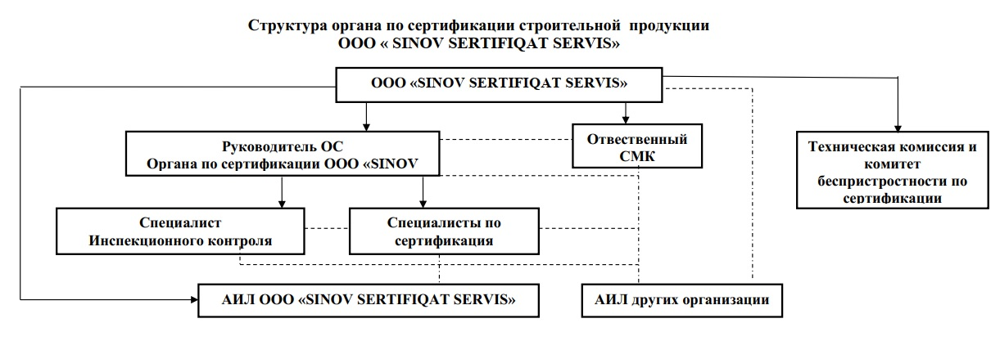

«SINOV SERTIFIQAT SERVIS» MChJ sertifikatlashtirish organi - O'zbekiston Respublikasi Milliy akkreditatsiya tizimi tomonidan O'zbekiston Respublikasi Milliy sertifikatlashtirish tizimida mahsulotlarni normativ hujjatlar talablariga muvofiqligini sertifikatlashtirish ishlarini olib borish huquqiga ega bo'lgan akkreditatsiyadan o'tgan organ.
«SINOV SERTIFIQAT SERVIS» MChJ sertifikatlashtirish organi sertifikatlashtirish sohasida ishonchli hamkor sifatida e'tibor qozongan. Biz O'zR MST da ro'yxatdan o'tgan o'z akkreditatsiyalangan ekspertlarimizga egamiz. Xodimlarimizning yuqori tayyorgarlik darajasi va tezkorligi orqali oldimizga qo'yilgan vazifalarni sifatli bajarishga kafolat beramiz.
Biz barcha kerakli normativ hujjatlar va texnik talablarni chuqur bilgan holda, zamonaviy metodikalardan foydalanib, har qanday murakkablikdagi loyihalarni qisqa muddatlarda bajaramiz.